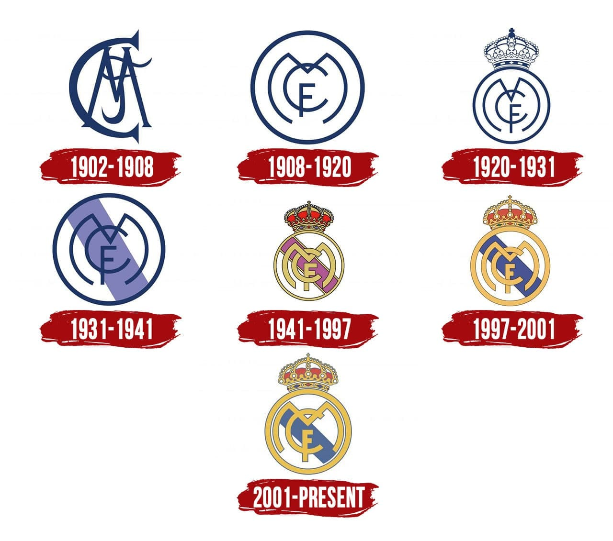

A címer története:

A Real Madrid legelső címere a maihoz képest még elég egyszerű volt. A címerben fehér alapon a klub nevének rövidítése (MCF – Madrid Club de Fútbol) szerepelt egyéni elrendezésben. Az első változtatást akkor eszközölték, amikor úgy döntöttek, hogy a kezdőbetűk egy körben szerepeljenek. Bár ez volt a klub címere egészen az 1920-as évek végéig, a sportklubokra vonatkozó akkori rendelkezés szerint a hivatalos mérkőzéseken olyan címert kellett használni, amiben szerepel a város jelképe.
1920-ban a klub megkapta a spanyol királytól a Real (királyi) előtagot, így a klub neve Real Madrid Club de Fútbol-ra változott. Ezután a spanyol korona is belekerült a címerbe. A Franco-diktatúra idején, amikor Spanyolországban köztársaság volt, az összes spanyol labdarúgócsapatnak, így a Real Madridnak is el kellett távolítaniuk a nevükből a királyi jelzőt, címerükből pedig a koronát. A Real azonban, mivel a rezsim támogatását élvezte, még a köztársaság ideje alatt újra használhatta a királyi szimbólumokat.
A klub címere a jelenlegi formát 1941-ben nyerte el, a betűk ekkor kaptak arany színezést, végleg visszakerült a címerre a spanyol királyi korona, a betűk hátterébe pedig keresztben egy lila csík került, ami Kasztíliát szimbolizálja. Ezt követően csak kisebb változtatások történtek, 2001-ben például megvastagították az arany motívumokat a címerben, valamint a kör egy vékony, tengerkék szegélyt kapott.
2014 szeptemberében a klub nagy összegű stratégiai szponzori szerződést kötött Abu Dhabi Nemzeti Bankjával, amelynek egyik feltétele az volt, hogy a klub címeréből távolítsák el a keresztet, tekintettel a többségben várhatóan muszlim vallású kártyatulajdonosokra. A klub vezetősége elfogadta követelést. (Hasonló alkut elsőként, 2010-ben az FC Barcelona kötött, melynek címeréből kivették Barcelona város jelképét, a piros keresztet).